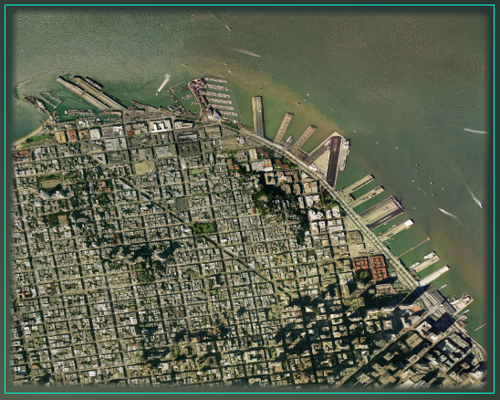

Google Earth Enterprise Documentation Home | Fusion tutorial
Segmenting Large Imagery Files
Google Earth Enterprise Fusion does not allow you to import raw imagery source files larger than 80 GB. (Raw size = number of pixels width * number of pixels height * 3.) Therefore, if you have an imagery source file that is larger than 80GB, you can split it into two or more source files using the gesplitkhvr command.
The gesplitkhvr tool produces a grid of image files designated as rows and columns. For example, if you specify 2 rows and 2 columns, the image is split into four smaller files. If you create a separate resource for each resulting source file, it would look like this in the Preview pane:
However, you can reconnect the split images by adding them all to a single resource, which would look like this in the Preview pane:
To split a large source file into multiple smaller files:
At the command prompt, change to the folder that contains the tutorial imagery source files by entering:
cd /opt/google/share/tutorials/fusion/ImageryConvert a
.tiffile to a.khvrfile by entering:gevirtualraster -o path/virtual_raster.khvr usgsSFHiRes.tifwhere path is the path to the folder where you want to save the resulting
.khvrfile. (See Creating Imagery Mosaics for more information about thegevirtualrastertool.)Note: The path where you save the resulting
.khvrfile must be on a known volume. (See “geconfigureassetroot --editvolumes” in the Command reference.)Change to the folder where you stored the virtual_raster.khvr (the value of path in step 2) by entering:
cd pathSplit the
.khvrfile into a 4x4 grid (16 image files) with a 10-pixel overlap among all of the files by entering:gesplitkhvr --rows 4 --cols 4 --overlap 10 virtual_raster.khvrThe names of the resulting files appear on the screen as they are created. The file names are constructed from the name of the original file (
virtual_raster), a row and column designation for each file (starting with-R1C3), and the.khvrextension.
Now you can import the 16 resulting image files into a resource.